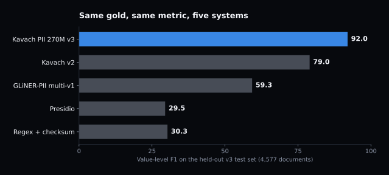
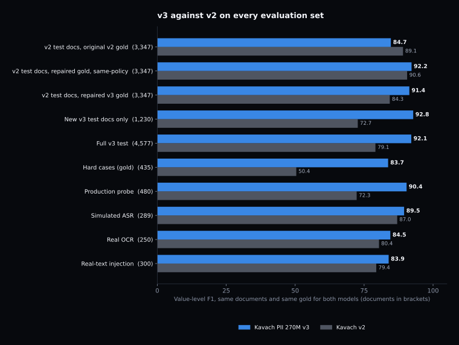
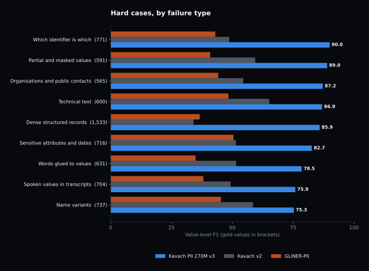
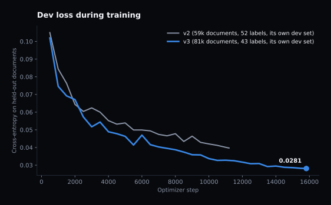
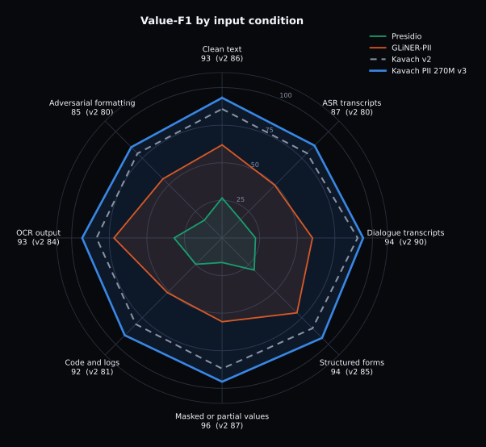
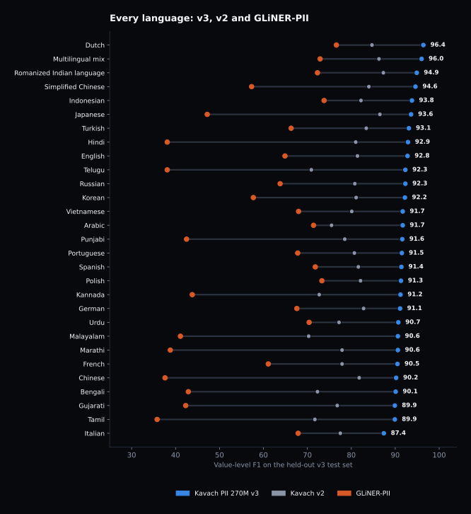
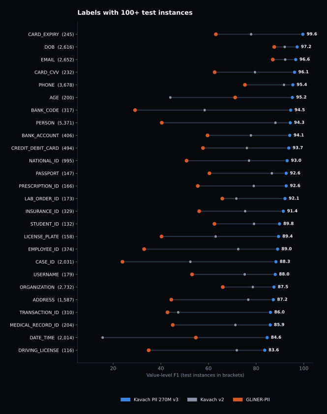
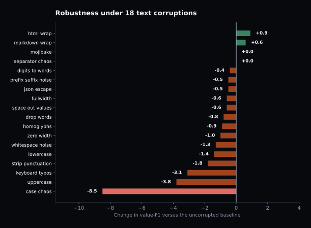
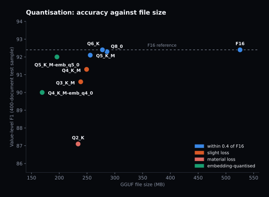

Introducing Kavach PII 270M: a 270M model that finds personal data better than GLiNER, Presidio and spaCy, in 29 languages, trained on one laptop GPU
Updated 29 September 2026: this post now describes version 3. I first published it for v2, which scored 88.4 on its own test set. Re-checking every label afterwards showed that test set was missing roughly one value in ten, so v3 is two things at once: a better model, and a more honest measurement. The numbers and charts below are v3's, measured on a rebuilt 4,577-document test set where v2's own predictions are re-scored next to it. The story of how v1 became v2 is kept as it happened, with its numbers marked as v2's. What changed in v3 has its own section, and so does the one thing that got worse.
The problem nobody has actually solved
Every company that handles customer conversations eventually needs to answer the same question: where is the personal data in this text, so we can mask it before it goes into a warehouse, a training set, or a support agent's screen. It sounds like a solved problem. There is a well-known Microsoft library for it. There are regex patterns for card numbers. There are NER models going back a decade.
Then you point any of them at a real call-centre transcript, where the customer spells their account number out loud with an "um" in the middle of it, the agent reads it back wrong and corrects themselves, and half the conversation is in Tamil written in Latin letters. Recall falls off a cliff. Worse, the tools start flagging things that are not personal data at all, and a redaction pipeline that mangles clean text is arguably more damaging than one that misses.
I wanted to know how much of that gap is real difficulty and how much is just nobody having built for the messy case. So I built a model for it. This post is the whole build: the data, the design decision that mattered most, two audits that turned out to be worth more than any training run, the results, and a section on the things that did not work, because three of my hypotheses were wrong and one of them was wrong in an interesting way.

The model is Kavach PII 270M, a fine-tune of Gemma-3-270M. Version 3 handles 43 kinds of personal data across 29 languages, it was trained in six hours on a single RTX 5060 Laptop GPU with 8 GB of memory, and it runs in 196 MB as a quantised GGUF, within half a point of full precision. Both the model and the quantised builds are on Hugging Face.
| On 4,577 held-out documents | Kavach v3 | Kavach v2 | GLiNER-PII multi-v1 | Presidio | Regex + checksum |
|---|---|---|---|---|---|
| Value F1 | 92.0 | 79.0 | 59.3 | 29.5 | 30.3 |
| Precision | 92.0 | 86.8 | 67.1 | 30.3 | 66.0 |
| Recall | 92.1 | 72.5 | 53.1 | 28.7 | 19.6 |
| Exact span F1 | 92.5 | 80.1 | 57.8 | 29.5 | 29.1 |
| Redaction recall | 96.0 | 82.2 | 61.1 | 48.9 | 23.9 |
| False positives on PII-free documents | 12.5% | 2.0% | 77.7% | 83.4% | 23.9% |
Look at the last row before the first one, because that is where v3 is worse than v2. Presidio flags something in 83 out of every 100 documents that contain no personal data at all, and GLiNER in 78. That is the number that decides whether you can put a redactor in front of a corpus, and it is the number almost nobody reports. When I first published this post, v2 sat at 0.4% on its own test set and 2.0% on this one. v3 is at 12.5%.
Most of those cases, 35 of the 55 documents, are nothing but a date or a reference number in a document about nobody: an expiry date on a product notice, an order reference in a shipping log. A date or a case number is personal data only when it belongs to someone's record, and v3 learnt to tag them eagerly from the thousands of dense bank statements and forms added for this version. If over-masking such documents matters to you, drop the result when the only labels found are dates and case numbers:
if {s["label"] for s in result["spans"]} <= {"DATE_TIME", "CASE_ID"}:
result["spans"] = []That brings the rate to 4.5% for a cost of 0.5 F1, because some real records contain nothing else, an appointment reminder with a booking reference for example. It is still a regression, it is in the model card, and it is first on the list for the next version.
Why the existing tools struggle
It is worth being precise about the failure, because "the baselines are bad" is a claim that deserves scrutiny, especially when I picked the test set.
Regex and checksums are precise and nearly blind. 66.0 precision, 19.6 recall. They find an IBAN or an email, and they cannot find a name, an address, or a date of birth, which between them are most of the personal data in a conversation. There is no pattern to write for a PERSON, an ORGANIZATION or an ADDRESS.
Presidio is the default answer in most enterprises and its recognisers are English-first. On multilingual text it collapses. It is also tuned for recall over precision by default, which produces the 83% false-positive rate.
GLiNER-PII is genuinely good, and it is the honest competitor here. Zero-shot, takes arbitrary label names, and gets 59.3. Its weakness is script coverage: 64.9 on English but 37.6 on Chinese, 35.8 on Tamil, 38.1 on Telugu, 47.2 on Japanese. It also carries a 78% false-positive rate on clean documents.
spaCy deserves a mention because it is what most people reach for first. Its NER gives you PERSON, ORG, GPE, DATE and a handful more. It has no concept of a medical record number, an insurance policy ID, a UPI address or a CVV, so it cannot be scored on this task without mapping away most of the label set. It is a general entity recogniser, not a privacy tool.
The decision that mattered most: values, not offsets
A span-detection model normally predicts character positions. Start 47, end 59, label PERSON. That is what a token classifier does naturally, and it is what everyone expects from an NER API.
I went the other way. The model emits a JSON array of values, and nothing else:
[{"label": "PERSON", "text": "Derek Okafor"},
{"label": "ORGANIZATION", "text": "Meridian Bank"},
{"label": "PHONE", "text": "+1-617-555-0142"}]Character offsets are then recovered by looking the values back up in the source text. Longest value first, every non-overlapping occurrence becomes a span, twenty lines of Python.
This sounds like a downgrade. It is the single best decision in the project, for three reasons.
It removes the failure mode generative models are worst at. Asking a language model to count characters produces confidently wrong integers. Copying a string is the thing they are best at. Before committing, I measured the cost: I took every gold annotation in the corpus, threw away the offsets, and tried to recover them from the values alone. Across 207,879 spans, 99.92% recovered exactly. The residual was almost entirely one case: a SIGNATURE whose text is identical to a PERSON name elsewhere in the same document, which value-only annotation genuinely cannot separate. That is one reason v3 folds SIGNATURE into PERSON.
It makes hallucination detectable. A value the model invents will not be found in the source text. That gives you a free, automatic integrity check on every prediction, and a number you can report: on the v3 test set, 228 of 28,712 predicted values (0.8%) did not occur in the input, against 1.8% for v2 on the same documents. Try getting that signal out of a model that emits indices.
It finds every occurrence for free. A customer's phone number mentioned four times gets masked four times, because the locator matches all of them, even though the model listed the value once.
Building documents that look like real work
No real personal data was used anywhere in this project. Everything is synthetic, generated against a blueprint and passed through quality gates. v2 was trained on 65,000 documents; v3 keeps all of them, relabelled, and adds 23,434 more.
| v3 split | Documents | Labelled values | PII-free documents |
|---|---|---|---|
| train | 81,343 | 523,028 | 7,506 |
| dev | 3,964 | 21,520 | 393 |
| test | 4,577 | 28,672 | 440 |
| hard cases, gold | 435 | 6,862 | 29 |
| production probe, built by code | 480 | 7,924 | 0 |
The corpus spans 29 language groups, 23 domains and 12 input conditions. The conditions are the point. Clean text is well under half of it. The rest is ASR transcripts with no punctuation and spoken digits, real OCR output from rendering documents in a headless browser and running Tesseract over them, structured forms, two-speaker dialogue with read-backs and corrections, partially masked values, code and logs, and adversarial formatting with zero-width characters, homoglyphs and full-width digits.
About one training document in eleven contains no personal data at all. These are not blank filler. They are realistic text from the same domains containing lookalikes: order numbers, version strings, timestamps, amounts, loopback IP addresses, place names, job titles. A negative that simply says "this record contains no PII" teaches the model to detect the announcement, so the generation prompt forbids it and a gate rejects any that slip through.
The gates did real work. During v2's final generation round they rejected 106 documents for English leaking into supposedly monolingual Urdu or Korean text, 64 for containing personal data in a document that was meant to be a hard negative, and 59 for malformed annotation markup. Those rejections cost extra generation calls. They also kept English contamination out of the Urdu training distribution, which is exactly the kind of quiet corruption that would have been invisible in the final numbers.
Splitting without leaking
Documents are grouped by synthetic identity, so every document mentioning a given generated person lands on one side of the split. On top of that, any document derived from another one, an ASR rewrite or an OCR round trip, moves with its source.
That second rule caught a real leak. Some documents embed several source samples inside a long Wikipedia passage. When I moved one of those into the test set because one embedded sample belonged there, it dragged along other samples that were still in training. My split script has an assertion for exactly this, and it aborted the write twice before I fixed the logic. Both times the leak would have been invisible in the final numbers and would have inflated them. For v3 the check went one step further: 564 test and 288 dev documents that shared any identifier value with a training document were moved into training, and no training text appears in any evaluation set.
The audit was worth more than the training run
After the first model finished I had 86.1 F1 on dev and a list of weak labels. The obvious next step was more data for the weak spots. Instead I spent a day auditing the labels, and it changed the plan completely.
The check is simple. For every value that is tagged somewhere in the corpus, find every other place that exact string appears, and ask how often it is tagged there too. If the same string is a positive in one document and a negative in the next, no amount of data will fix that label. The model is punished either way.
| What I found | Measurement | What it meant |
|---|---|---|
| GEO_LOCATION contradicted its own guideline | Bare city names tagged 15.6% of the time (Mumbai 16%, Chennai 3%, Delhi 0%) | Unlearnable noise, not a model weakness |
| DATE_TIME mislabelled dates of birth | 14 of 18 model "errors" had an explicit birth cue nearby | The model was right, the gold was wrong |
| PERSON false positives were mostly gold misses | 66% contained a name from the generator's own identity pool | Precision was understated |
| A third of errors were boundary mismatches | 310 of 917 found the entity with different edges | Different problem from a miss |
The DATE_TIME finding is my favourite because of how it surfaced. The model kept labelling things
DOB that the gold called DATE_TIME. I wrote a check for a birth cue near the value, in twenty
languages, and the first version said only 5 of 18 had one. Then I noticed my regex used
\b word boundaries, which do not work against Devanagari or Vietnamese. Fixing that
took it to 14 of 18. The model had been right the whole time and my verification was broken in the
same direction as my assumption.
So the plan changed from "train harder" to "repair the labels, re-measure, and only then retrain". The repairs were deterministic, scripted and reversible: 1,264 bare place names dropped from GEO_LOCATION, 525 DATE_TIME spans relabelled to DOB where a birth cue was present, and 100 GEO_LOCATION values that were actually street addresses moved to ADDRESS rather than deleted, because throwing them away would have cost real recall. That was v2. The same lesson, applied to every label instead of four, is what v3 is.
Version 3: fixing the labels, then the gaps
The v2 audit only checked labels against each other. It could find a string tagged in one place and not another, but it could not find a value that was untagged everywhere. So for v3 every one of the 65,000 existing documents went back through LLM annotators that proposed additions, removals, relabels and boundary fixes against the existing gold, and a stronger model, reasoning before it answered, verified every removal and relabel. The evaluation sets were audited twice more by independent models. A document-by-document review of a 500-document sample then gave the uncomfortable answer: the old gold had been missing roughly one value in ten, mostly names in form fields and signature lines, repeated and partial mentions, and organisation names.
That changes what v2's 88.4 means. It was measured against a gold that left one value in ten out, so a model that found those values was penalised for it. The only fair way to compare the two versions is to score both on the same documents against the same gold, one change at a time:

| Evaluation | Documents | Kavach v2 | Kavach v3 |
|---|---|---|---|
| v2 test documents, original v2 gold | 3,347 | 89.1 | 84.7 |
| same documents, repaired gold, only values the old gold also had | 3,347 | 90.6 | 92.2 |
| same documents, repaired v3 gold | 3,347 | 84.3 | 91.4 |
| new v3 test documents only | 1,230 | 72.7 | 92.8 |
| full v3 test | 4,577 | 79.1 | 92.1 |
The first row is the one to read carefully, because it is the only place v2 wins. On the original v2 gold, v3's recall is higher than v2's (90.8 against 88.7), but its precision is 79.4, because it returns 3,181 values the old gold does not contain. 1,982 of them, 62%, are in the repaired gold with the same label, and most of the rest are values whose rules changed in v3. In other words v3 is being marked down for finding what the old answer key missed. The second row keeps only values the old gold also had, so neither model gains or loses from the repair: v3 is 1.6 points ahead there. The new test documents come from the same generator as 17,942 of v3's training documents, a style v2 never saw, so part of that 20-point gap is familiarity. That is exactly why v3 also has a test set no language model touched, further down.
What went into the new data
| New in v3 | Training documents |
|---|---|
| Dense records with 15 to 40 values: bank statements, CSV exports, logs, KYC forms, claims | 5,795 |
| Long documents of 200 to 500 words: email threads, transcripts, reports | 3,104 |
| Rare labels in natural context | 2,223 |
| Weak languages: Indic scripts, romanised and code-mixed text | 3,028 |
| Hard negatives: few or no values among non-personal look-alikes | 2,354 |
| Noisy values: typos, OCR confusions, look-alike letters, zero-width characters | 1,438 |
| Hard cases, one batch per error type v2 made most often | 5,492 |
None of it was trusted on arrival. Written rules, applied by code, handle what a model gets
inconsistently: honorifics and cue words stay outside the value in every script (Mr Rao,
Rao sir, Yamada-san and गवळी सर all tag the name alone),
sentence punctuation, time particles in Korean, Kannada and Tamil, place names that are not addresses,
vague dates, fully masked values and placeholders. Every rule logs every change it makes.
Then it was measured per language. 4,400 training documents, 150 per language, were audited by a model that had not audited the training set before, with every correction verified: precision 98.9, recall 98.4, and no language below 97.9 precision or 97.1 recall. 870 more were read one at a time by LLM reviewers working from the written annotation rules, not by people: precision 97.8, recall 97.1. The error types that turned up there were then fixed across the whole corpus by rule.
The hard-case documents from my own local generator got the harshest treatment. A gate removed placeholders, sequential and repeated-digit identifiers, copied example values and near duplicates. Documents an automated auditor flagged as possibly missing values were set aside rather than trained on, because I measured the judges on those calls and no automated judge could tell a real omission from a false alarm. A final review of 20 documents per language dropped 10 languages that fell below 97 precision or 95 recall from that batch altogether.
The label set also shrank from 52 to 43. Most of the folded labels were identifier types that cannot be told apart without a cue word, SSN against Aadhaar against PAN against tax ID, IBAN against account number, and a redaction pipeline treats them the same way anyway. If you used v2, the migration table in the model card has every change, and the one line of code that matters: the label list is part of the prompt.
Hard cases, with their own gold
v2's errors fell into nine recurring types, so v3 has a separate gold set built around them: 435 documents, 15 per language, about 16 values each. They were written by different writers from the training documents with separate value pools, and each one was re-read by a second LLM reader who confirmed 99.8% of the 6,837 labels. Every document also carries planted look-alikes that must not be tagged: helplines, head-office addresses, SKUs, version strings, public dates.

| On 435 hard-case documents | Kavach v3 | Kavach v2 | GLiNER | Presidio |
|---|---|---|---|---|
| Value F1 | 83.5 | 50.2 | 41.5 | 20.0 |
| Redaction recall | 91.0 | 59.8 | 42.1 | 36.8 |
| Planted look-alikes tagged, of 2,213 | 164 | 290 | 477 | 681 |
| Predicted values not in the text | 2.7% | 7.1% | n/a | n/a |
The caveat belongs right next to these numbers: this gold was written by the same kind of process that wrote the hard-case training documents, with different writers and value pools. It measures whether the targeted data worked. It does not prove the model generalises.
A test set no language model touched
That is the job of the production probe: 480 documents in eight real-world formats, in English, Hindi, Tamil, Arabic, Spanish and German. A script builds every document and records every personal value it inserts, so the gold is complete by construction and shares no style with any generator.
| Format | Gold values | Kavach v3 | Kavach v2 | GLiNER | Presidio |
|---|---|---|---|---|---|
| Insurance claim form | 797 | 99.1 | 84.6 | 74.5 | 42.1 |
| KYC form | 660 | 98.6 | 84.2 | 94.4 | 27.6 |
| Email thread | 660 | 97.6 | 92.4 | 71.5 | 42.1 |
| Discharge summary | 660 | 95.8 | 69.0 | 58.2 | 42.5 |
| Call transcript | 420 | 93.1 | 98.1 | 61.0 | 38.3 |
| Access log | 1,248 | 88.0 | 66.4 | 79.3 | 27.3 |
| CSV export | 2,465 | 86.7 | 63.2 | 57.2 | 39.3 |
| Bank statement | 1,014 | 82.6 | 58.2 | 15.5 | 29.7 |
| All formats | 7,924 | 90.4 | 72.3 | 62.7 | 35.6 |
v3 tagged none of the 180 planted look-alikes. v2 tagged 48, GLiNER 178 and Presidio all 180. Two rows
need a word. The bank statement and CSV scores are held down by the probe's own gold: the script that
built it predates v3's labelling rules and does not record transaction dates on a statement or customer
IDs in a CSV export, both of which v3 tags as personal. Those two account for 912 of v3's 1,081
unmatched predictions. The gold was fixed before v3 was trained and I have not changed it since, because
changing an answer key after seeing the answers is how numbers stop meaning anything. The call
transcript row is a real regression: when a customer reads out an 8-digit account number straight after
their phone number, v3 calls it PHONE in 13 of the 60 transcripts. The value is still found
and masked; only its type is wrong.
Training
LoRA at rank 64 on all attention and MLP projections, 15.2M trainable parameters against a frozen bf16 base. For v3: 81,337 documents, 46.4M tokens, three epochs, 15,819 steps, six hours on the same 8 GB laptop GPU, with the augmentation rate raised from 0.35 to 0.5. Everything else is v2's recipe.

Three implementation details were worth more than any hyperparameter.
The loss only looks at completion positions. Gemma-3 has a 262,144-token vocabulary. Materialising logits for every position in a batch is what eats the memory. Since the loss is only defined on the assistant's JSON, the model runs the language-model head on just those positions. Measured on the same batch: identical loss to four decimal places, 2.3 GB peak instead of 8.7 GB. That one change is what let a 262K-vocab model train on an 8 GB card at a useful batch size.
Then v3's answers got long enough to break it anyway. A bank statement with forty values has a long answer, and the first v3 launch died allocating 2.3 GB for the cross-entropy of a single batch. The fix was to compute the loss in 512-token chunks under activation checkpointing, so only one chunk's logits exist at a time. Checked on CPU against plain cross-entropy, the loss differed by 1e-6 and the gradients by 3e-10. The whole run then peaked at 2.6 GB.
Windows will not tell you it has run out of VRAM. Halfway through the first run
back in v1, throughput collapsed from 2,000 tokens per second to 90. No error, no out-of-memory, GPU
utilisation still reading 100%. The Windows display driver had started paging GPU memory into
system RAM. The tell is in a performance counter rather than in nvidia-smi:
\GPU Process Memory(*)\Shared Usage showed gigabytes against the Python process.
Capping PyTorch's share with torch.cuda.set_per_process_memory_fraction(0.80) fixed
it, and every run since has held a steady pace. If you train on Windows, watch that counter.
Results
Across input conditions

| Condition | Test documents | Kavach v3 | Kavach v2 | GLiNER | Presidio |
|---|---|---|---|---|---|
| Masked or partial values | 161 | 95.6 | 86.9 | 55.7 | 16.3 |
| Structured forms | 238 | 94.0 | 85.0 | 70.4 | 30.2 |
| Dialogue transcripts | 265 | 93.8 | 90.1 | 60.1 | 22.2 |
| Clean text | 1,374 | 93.2 | 85.8 | 61.9 | 26.6 |
| OCR output | 74 | 93.0 | 83.5 | 71.9 | 31.9 |
| Code and logs | 115 | 91.5 | 81.1 | 51.4 | 24.7 |
| ASR transcripts | 688 | 86.9 | 79.8 | 49.6 | 17.3 |
| Adversarial formatting | 245 | 85.4 | 79.5 | 55.6 | 16.7 |
These are the 3,347 test documents that carry a condition tag. The weakest condition for v3, adversarial formatting at 85.4, is above the strongest for GLiNER, OCR at 71.9.
Every language, with error bars
This is the part I care about most, and the part that took the most work to be able to state honestly. In the first version, several languages had 13 to 18 test documents. Russian scored 60.0 and I nearly wrote "Russian is weak" in the notes. Then I bootstrapped a confidence interval over those documents and got 37 to 79. The number meant nothing.
So before the v2 training run I generated 10,255 more documents specifically to bring every language to at least 80 held-out test documents. In the v3 test set every language group has at least 85, so each interval is between two and eight points wide. Only then are per-language claims worth making.

| Language | Test docs | Kavach v3 | 95% interval | Kavach v2 | GLiNER |
|---|---|---|---|---|---|
| Dutch | 90 | 96.4 | 94.3 to 98.3 | 84.7 | 76.6 |
| Simplified Chinese | 100 | 94.6 | 92.7 to 96.2 | 84.0 | 57.3 |
| Japanese | 91 | 93.6 | 91.4 to 95.7 | 86.5 | 47.2 |
| Hindi | 141 | 92.9 | 90.8 to 94.8 | 81.0 | 38.1 |
| English | 1,238 | 92.8 | 91.9 to 93.6 | 81.4 | 64.9 |
| Telugu | 174 | 92.3 | 90.7 to 93.8 | 70.9 | 38.1 |
| Korean | 106 | 92.2 | 90.1 to 94.3 | 81.1 | 57.7 |
| Arabic | 173 | 91.7 | 89.7 to 93.6 | 75.5 | 71.4 |
| Punjabi | 118 | 91.6 | 89.4 to 93.7 | 78.5 | 42.5 |
| Kannada | 156 | 91.2 | 89.1 to 93.1 | 72.7 | 43.8 |
| Malayalam | 156 | 90.6 | 88.5 to 92.4 | 70.3 | 41.1 |
| Chinese | 85 | 90.2 | 85.5 to 93.8 | 81.8 | 37.6 |
| Bengali | 169 | 90.1 | 88.0 to 92.1 | 72.3 | 42.9 |
| Tamil | 194 | 89.9 | 87.6 to 91.7 | 71.7 | 35.8 |
| Italian | 103 | 87.4 | 84.1 to 90.6 | 77.5 | 67.9 |
Fifteen of the twenty-nine are shown; the full table is in the model card. The languages I named as the weakest after v2 moved the most: Telugu gained 21.4 points, Kannada 18.5, Malayalam 20.3, Bengali 17.8. The spread across all 29 is now under ten points, against seventeen for v2, and Italian at 87.4 is the weakest.
One finding from v2 that surprised me: training volume barely predicts per-language quality. The correlation between the number of training documents in a language and its dev F1 was r = 0.20. Japanese with 228 training documents scored 91.8. Hindi with 2,082 scored 82.2. What matters more is how well the base model already knows the script, and what mix of noisy conditions that language's documents happen to contain. That is why v3's language work was targeted, a few thousand documents in the scripts and conditions that were failing, rather than thousands more of everything.
By label

What did not work
Three experiments failed, and the failures are more informative than most of the successes.
The regex union made things worse
The obvious production design is a hybrid: run the model, run checksum and regex recognisers, take the union, get the model's understanding plus the rules' precision on structured identifiers. I built it and measured it on v2. Recall went up by 0.4 points. Precision fell by 4.0, and the false-positive rate on clean documents went from 0.4% to 9.0%. Overall F1 dropped from 88.4 to 86.6. The rules mostly fire on things the model already found, and where they fire alone they are usually wrong. The hybrid is not in the shipped configuration and the model card says not to build it.
The case-augmentation fix only half worked
The robustness suite applies eighteen corruptions to held-out documents. Random per-character capitalisation was by far the worst, costing 16.8 F1 in v1 and pushing the false-positive rate on clean documents from 0 to 10.8%.
The cause looked obvious and satisfying. I checked the augmentation mix and found that
uppercase was the only one of eighteen operations missing from it entirely, and
case_chaos was weighted at 0.04. At the augmentation probability used for the first
run, the model had seen uppercase text in 0% of training documents and case-chaos in about 1%.
So I rebalanced the mix by measured weakness, raised the probability, and retrained v2. Uppercase robustness improved by 3.5 points. Case-chaos improved by 1.2. Keyboard-typo robustness got 2.6 points worse. The gains in v2 came from the data and the label repairs, not from my augmentation theory.
v3 raised the augmentation rate again, to 0.5, alongside all the new data, and this time the numbers moved: case chaos now costs 8.5 points instead of 15.6, and keyboard typos 3.1 instead of 8.5. I cannot tell you which change did it, because they arrived together, and after being wrong about this once I am not going to guess. The advice in the model card is still the unglamorous one: normalise case before you call the model.

Two measurement errors that nearly became headlines
After repairing the labels for v2 I re-scored the first model and it appeared to drop from 86.1 to 83.3. I was about to write that the repair had hurt. The predictions file had been generated before the split changed, so 145 documents had no prediction at all and were being counted as complete misses. On a like-for-like comparison the repair was neutral on carried-over documents and clearly positive on the labels it touched. The lesson is mundane and cost me an hour: check that your prediction file has as many rows as your gold file before believing a delta.
The v3 release produced a second one. Benchmarking the quantised builds, every quant showed exactly
seven unparseable answers out of 400, which looked like quantisation damage until I noticed that F16
had the same seven. The benchmark started llama-server with -c 4096 --parallel 4, and
with an explicit slot count llama.cpp divides the context evenly, so each request had 1,024 tokens for
the prompt and the answer together. The seven were dense records whose answer did not fit, cut off
mid-list. With 4,096 tokens per slot, every quant produced zero parse failures, and one conclusion in
the table below flipped because of it. If you serve this model with a fixed number of slots, size the
context per slot.
Quantisation, and an architecture that breaks the usual advice
I built the full ladder of GGUF quantisations and measured each one for accuracy, speed and memory on the same 400 documents. The results are not what the usual guidance predicts.

| Build | Size | Value F1 | Change vs F16 |
|---|---|---|---|
| F16 | 526 MB | 92.4 | reference |
| Q8_0 | 286 MB | 92.3 | -0.1 |
| Q6_K | 278 MB | 92.4 | +0.0 |
| Q5_K_M | 256 MB | 92.1 | -0.3 |
| Q4_K_M | 249 MB | 91.3 | -1.1 |
| Q3_K_M | 239 MB | 90.6 | -1.8 |
| Q2_K | 234 MB | 87.1 | -5.3 |
| Q5_K_M with q5_0 embedding | 196 MB | 92.0 | -0.4 |
| Q4_K_M with q4_0 embedding | 169 MB | 90.0 | -2.4 |
For v2, Q4_K_M matched F16 exactly and was the obvious pick. For v3 it loses 1.1 points, and the embedding-quantised Q5_K_M build is both 53 MB smaller and closer to full precision, so that is the new recommendation. I measured this; I have not explained it, and I would rather say so than invent a reason. Q2_K saves 15 MB over Q4_K_M and costs another 4.2 points. It is strictly a bad trade, and the reason for that one is structural.
The token embedding is 63% of this model's parameters. 262,144 tokens by 640 dimensions is 168M of the 268M total. llama.cpp keeps embeddings at high precision by default, so a nominal Q2_K build only reaches 6.88 bits per weight instead of the usual 2.6. You are paying accuracy for compression that mostly does not happen.
The hidden size is 640, which is not divisible by 256. That is the K-quant block
size, so during quantisation llama.cpp silently falls back to q5_0 or
q8_0 for most tensors. It prints a warning per tensor, which is easy to scroll past.
Quantising the embedding as well is what gets the model to 196 or 169 MB. There is a trap there too:
--token-embedding-type q4_K converts the tensor, then fails a GGML assertion when
writing the file, and llama-quantize still exits with status 0. You end up with a
file of plausible size that llama.cpp refuses to load with invalid magic characters.
I only caught it because I tried to load every artefact before benchmarking it. Use the block-32
legacy types, q4_0 or q5_0, for the embedding.
Using it
The model is on Hugging Face in two repositories: the transformers model with the LoRA adapter alongside it, and a GGUF repository with the quantised builds.
from transformers import AutoTokenizer, AutoModelForCausalLM
MODEL = "inboxpraveen/Kavach-PII-270M"
tok = AutoTokenizer.from_pretrained(MODEL)
model = AutoModelForCausalLM.from_pretrained(MODEL, dtype="bfloat16").to("cuda").eval()
msgs = [{"role": "user", "content": f"{INSTRUCTION}\n\nText:\n<<<\n{text}\n>>>"}]
prompt = tok.apply_chat_template(msgs, tokenize=False, add_generation_prompt=True)
out = model.generate(**tok(prompt, return_tensors="pt").to("cuda"),
max_new_tokens=1024, do_sample=False)It serves under vLLM and SGLang with a single command each, and under llama.cpp, Ollama or LM Studio from the GGUF builds. The exact instruction string matters: the model was trained on one specific prompt, with the 43-label list inside it, and paraphrasing it costs accuracy. Use greedy decoding and allow 1,024 output tokens, because a dense bank statement can need more than 800. If an output fails to parse, retry that one document with a repetition penalty of 1.1, which recovered 102 of 108 failures across v3's evaluation sets; applying the penalty to every request instead lowered accuracy by 1.4 points when I tested it on v2.
Both repositories also ship kavach_extract.py, a single function that does
everything around the model call: it splits long input into overlapping windows, locates every
returned value in the original string, merges the windows and gives you character offsets. It
needs nothing outside the standard library. Two things in it turned out to matter more than I
expected.
The first is window size, and I got it wrong twice before the numbers settled. My first guess was that more context helps, since telling a date of birth from an appointment date depends on a cue that may sit a sentence away. My second guess, after an early measurement, was that tiny windows win. Both were wrong, and the second was wrong because of a bug in my own chunker: when a window edge snapped back to a line break, the next window started past the words in between, so a few words of every document were never sent to the model at all. At a 50-word window that silently dropped words from 19% of texts, and at 30 words from 46%. Nothing I was checking could see it, because the spans that did come back were all correct.
With that fixed, the picture is a compromise between two opposite failures, and I re-measured it for v3. Cut a coherent document too small and precision goes: on 92 real test documents of 180 to 385 words, a 50-word window scores 0.858 precision where the same documents sent whole score 0.893, because the model has lost the surrounding sentence it needs to pick the right label. That cost was 13 points for v2 and is 3.5 for v3, which saw far more long documents in training. Hand it too much at once and recall goes: on inputs of about 700 words, recall falls from 0.92 at a 100-word window to 0.64 at 400, because a single answer stops short of listing everything in a long, dense input. A 120-word window with 25 of overlap is still near the top of both curves; do not go past about 180.
I had also convinced myself that small windows were faster, on the grounds that output length dominates runtime. That was an artifact of the same buggy run. Measured properly on v2, more calls cost more: 245 calls at a 30-word window took 171 seconds against 113 seconds for 68 calls at 100 words.
The second is how you match a returned value back to the source. The obvious implementation is
re.escape plus finditer, and it is wrong in a way that only shows up
in the output. It places spans inside longer words: Raj lands in the middle of
Rajesh, 2024 inside 20245, and redaction then emits
[PERSON]esh. A word-boundary check fixes it, but a plain \b is not that
check, for exactly the reason that broke my DATE_TIME audit earlier in this post: it does not work
against Devanagari, where the combining vowel sign that continues a word is not an alphanumeric
character. The rule that does work treats combining marks as part of the word, and switches the
boundary test off entirely for Chinese, Japanese, Thai, Khmer, Burmese and Korean, where words are
not separated by spaces or, in Korean's case, particles attach straight onto the noun. With that in
place, 98.8% of v3's predicted values locate as a whole word, 0.4% only inside a longer run and are
flagged rather than hidden, and the remaining 0.8% are the hallucinations the value-only design was
built to expose.
Transcripts need no special handling. Bracketed timestamps, SRT ranges and WebVTT cues survive redaction untouched, because 1,068 training documents contain bracketed timestamps and only one of them tags any, so the model simply learned to ignore them. On the 30 longest timestamped test documents, all 419 timestamps came through redaction intact.
from kavach_extract import extract_pii, redact, transformers_generate
result = extract_pii(transcript, transformers_generate(model, tok))
print(redact(transcript, result["spans"]))
# [00:00:03] Speaker 1: Hello, this is [PERSON] from [ORGANIZATION].
# [00:00:09] Speaker 2: Hi [PERSON]. My parcel is [CASE_ID] and my mobile is [PHONE].Where it is genuinely weak
It flags too many documents that contain no personal data. 12.5% on the test set, up from 2.0% for v2, mostly dates and reference numbers in documents about nobody. The two-line filter near the top of this post brings it to 4.5%. It is the first thing to fix.
Name variants and spoken values are the weakest cases. A person named in full and later by a nickname or a surname alone scores 75.3 on the hard-case gold, and numbers read aloud with corrections score 75.9. Words glued to values, case endings and particles, are next at 78.5. On the hard-case gold, Urdu, Kannada, Punjabi and Marathi are the lowest languages at 75 to 76, although with 15 documents each those figures are directional.
Identifier typing has a hard ceiling. Given KX-77255 with no cue
word nearby, no model can tell you whether that is an employee number or a case reference. In v2 I
measured this: of the confusions between identifier types, only 15% had a disambiguating cue within
40 characters. v3 still reads an account number said straight after a phone number as a phone number
in about one call transcript in five. For redaction this mostly does not matter, since the value
still gets masked, and redaction recall is 96.0. For a system that routes on type, it matters a lot.
The gold came from the same pipeline as the training data. This is the honest caveat on every number in this post except the production probe. The test set is held out and was never used for tuning decisions, but it is mine. The probe, built by code, is the first independent check I have. Evaluation on third-party corpora is the obvious next step and I have not done it yet.
Eleven labels are still thin. IP_ADDRESS, VIN,
URL_PERSONAL, RELIGION, VOTER_ID, DISABILITY,
BIOMETRIC_DESCRIPTOR, ETHNICITY, POLITICAL_BELIEF,
MAC_ADDRESS and GEO_LOCATION have fewer than 50 test instances each, and
DISABILITY at 62.2 is the weakest label overall. After v2 six labels had under ten
instances; AGE and GENDER_SEX now have enough to measure, at 95.2 and 92.2.
What this is useful for
The obvious use is redaction before text goes somewhere it should not: into an analytics warehouse, a vendor's API, a fine-tuning corpus, a screen-share. Redaction recall of 96% is a usable operating point for that, as long as you can live with over-masking roughly one clean document in eight, or one in twenty-two with the filter.
Less obvious, and the thing I did not expect: it works as a general structured-extraction model for the identifier-shaped parts of a document. Case numbers, policy numbers, medical record numbers, invoice references. These are exactly what spaCy has no labels for and what regex gets wrong whenever the format varies. v3's jump on dense records, 34 to 86 on the hard-case gold, makes this more true than it was. If you are pulling identifiers out of forms, statements or exports today with a pile of patterns, this is worth measuring against.
It is also small enough to run where the data is. 196 MB on a CPU means the text never leaves the machine, which for healthcare and financial deployments is frequently the whole requirement.
What is next
After v2 I wrote that Kannada, Telugu, Bengali and Arabic were the weakest languages and the next round would target them. On the v3 test set v2 scores 72.7, 70.9, 72.3 and 75.5 on those four, and v3 scores 91.2, 92.3, 90.1 and 91.7. The list for the next round: false positives on documents with no personal data, name variants, spoken values, the ten languages held out of the extra hard-case batch, and case robustness that does not depend on the caller normalising first. Evaluation against third-party PII corpora is still the credibility gap I most want to close.
The training recipes, the generation blueprint and the evaluation harness will go out with a later release. If you try the model on your own data I would like to hear what breaks.
Resources & Links
The models and tools compared or used:
Gemma-3-270M-IT, the base model; GLiNER-PII multi-v1 and the GLiNER paper (Zaratiana et al., 2023); Microsoft Presidio with spaCy en_core_web_lg; llama.cpp (build b11120) for GGUF conversion and quantisation; PEFT for LoRA; Tesseract for the OCR round trips.
Standards and references:
HIPAA Safe Harbor, the 18 identifiers; PCI DSS; the Gemma Terms of Use and Prohibited Use Policy, which govern the model weights; LoRA (Hu et al., 2021).